Page 1 / 原始页码 285
第 15 章 基因及其作用
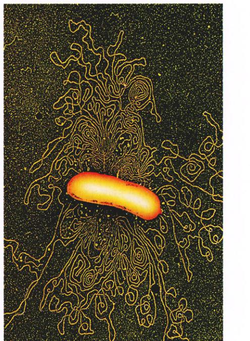
图 15.1 大肠杆菌的染色体 这一团复杂杂乱的 DNA 代表着大肠杆菌一整套合成生命物质的指令。
你身体的每一个细胞内都含有遗传物质，它们决定了你将会具有胳膊而不是鱼鳍，长出头发而不是羽毛，有两个眼睛而不是一个。你眼睛的颜色，指甲的纹理，以及其他你从父母那里继承来的特征都记录在你的身体细胞内。正如我们所知，这些信息包含在长链 DNA 分子内（图 15.1）。遗传的本质，就是细胞运用 DNA 中的信息产生出特殊蛋白质从而影响细胞形态功能的能力。从这个角度上讲，蛋白质是遗传的工具。本章将分别以原核细胞和真核细胞为例，讨论蛋白质是如何根据 DNA 中的遗传信息合成的。
Page 2 / 原始页码 286
15.1 中心法则描述了基因编码信息的流向
15.1.1 细胞通过 RNA 来制造蛋白
为了了解核细胞是如何运用其 DNA 来指导蛋白质合成的，必须先知道蛋白质是在细胞内什么地方合成的。我们可以把细胞放置在含有放射性标记氨基酸的培养基中一段时间来解答这个问题。细胞会利用标记的氨基酸并将其整合到蛋白质中，如果要寻找放射性蛋白质在细胞内最先出现的部位，你会发现它不是在含有 DNA 的细胞核中，而是在细胞质内由 RNA 和蛋白质形成的聚合体——核糖体 (ribosome) 中（图 15.2）。这些多肽工厂非常复杂，由若干 RNA 分子和超过 50 种不同的蛋白质组成（图 15.3）。蛋白质合成涉及核糖体表面的 3 个不同位点，分别叫做 P、A 和 E 位点，在本章的后面将要讨论。
1) RNA 的种类
在核糖体内发现的 RNA 叫做核糖体 RNA (rRNA) (ribosomal RNA)。在多肽的合成过程中，rRNA 提供了多肽的装配场所。除了 rRNA，翻译过程中还有两种重要的 RNA。转运 RNA (transfer RNA, tRNA) 分子不仅将合成多肽所需的氨基酸运至核糖体，同样也确定了每个氨基酸在伸长的多肽链上的正确位置（图 15.4），人的细胞含有大约 45 种不同的 tRNA 分子。信使 RNA (messenger RNA, mRNA) 分子是从 DNA 转录来的长链 RNA 分子，它转移到核糖体上以精确地指导某种氨基酸组装到多肽中。
这些 RNA 分子，再加上核糖体蛋白质和某些酶，组成了一个能够阅读 DNA 中由核苷酸序列编码的信息，并制造该信息所决定多肽链的体系。正如我们将要看到的，生物学家也学会了阅读这些信息。这样，他们就了解了许多关于基因到底是什么、如何指导蛋白质的合成以及将在什么时候合成蛋白质。
2) 中心法则
所有的生物体，从最简单的细菌到我们自己，都是通过同样的机制来解读和表达基因的，所以正如我们所知，生命的基础就是通常所提到的“中心法则” (The Central Dogma)：信息从基因 (DNA) 传递至基因的一个 RNA 拷贝，然后这个 RNA 拷贝再指导氨基酸链的序列装配（图 15.5）。简要地说，就是：
DNA → RNA → 蛋白质
3) 转录概述
中心法则的第一步是信息从 DNA 到 RNA 的转移，这发生在基因的 mRNA 拷贝产生的时候。像其他的 RNA 一样，mRNA 同样以 DNA 模板合成。因为 DNA 的序列被转录为 RNA 的序列，这个步骤就被称为转录 (transcription)。当 RNA 聚合酶 (RNA polymerase) 与基因起始端一个叫做启动子 (promoter) 的特殊结合位点相结合的时候，转录就开始了。从这里开始，RNA 聚合酶沿着基因链移动，它每遇到一个 DNA 核苷酸，就相应在不断伸长的 mRNA 链上加上一个互补的 RNA 核苷酸。
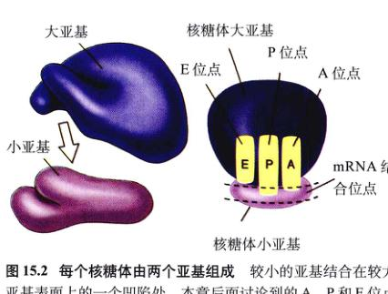
图 15.2 每个核糖体由两个亚基组成 较小的亚基结合在较大亚基表面上的一个凹陷处。本章后面讨论到的 A、P 和 E 位点在蛋白质合成中起到了关键的作用。
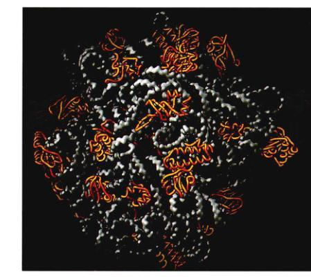
图 15.3 核糖体是非常复杂的机构 细菌核糖体大亚基的完整原子结构最近在 2.4Å 分辨率上得到解析。这个亚基的 RNA 表示为灰色，蛋白质是金黄色。亚基的 RNA 缠绕成不规则的形状，并互相吻合就好象三维的智力拼图。蛋白质合成中形成肽键的化学反应，是在核糖体 RNA 最内部进行的，核糖体于是也就成了核酶。蛋白质在活性部位上缺少，但在表面上的各个部位都很丰富。蛋白质通过与相邻的 RNA 链相互作用来稳定其结构。
Page 3 / 原始页码 287
是，DNA 中的鸟嘌呤 (G)、胞嘧啶 (C)、胸腺嘧啶 (T) 和腺嘌呤 (A) 分别与 mRNA 中的 C、G、A 和尿嘧啶 (U) 相对应。
当 RNA 聚合酶遇到基因另一端的转录“终止”信号时，它便从 DNA 上脱离下来，并释放出新合成的 RNA 链。这条链是与它所复制基因互补的转录本。

图 15.4 tRNA 的结构 (a) 在二维示意图上，tRNA 的三个环是不折叠的。其中的两个环在多肽链合成时与核糖体结合，而第三个环上含有一个反密码子序列，它与信使 RNA 上的三碱基序列互补。氨基酸与游离的 -OH 端相结合。(b) 在三维结构上，tRNA 的环是折叠的。
4) 翻译概述
中心法则的第二步是把 RNA 信息翻译成蛋白质，也就是 mRNA 转录本中所含的信息用来指导核糖体上多肽链合成时的氨基酸序列，这个过程叫做翻译 (translation)，因为 mRNA 转录本中的核苷酸序列被翻译成了多肽链中的氨基酸序列。当核糖体中的 rRNA 分子辨认并结合在 mRNA 上一个“开始”序列的时候，翻译就开始了。核糖体随后沿着 mRNA 分子移动，一次 3 个核苷酸。每 3 个一组的核苷酸都是一个决定什么氨基酸将被加在伸长的多肽链上的密码子。核糖体按此方法继续移动直到它遇到一个翻译“终止”信号，然后它从 mRNA 上脱离下来，并释放新生的多肽。
中心法则的两个步骤合并在一起，就是一个活性基因表达过程的简要概述。生物学家就把这个过程称为基因表达 (gene expression)。
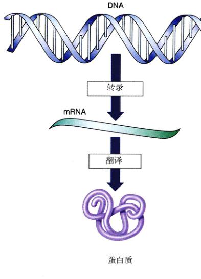
图 15.5 基因表达的中心法则 DNA 转录成 mRNA，而 mRNA 翻译成蛋白质。
15.2 基因以三核苷酸密码子编码信息
15.2.1 遗传密码
基因表达的根本问题是：“DNA 分子的核苷酸顺序是如何编码多肽链中氨基酸顺序的？”答案于 1961 年由弗朗西斯·克里克 (Francis Crick) 主持的实验所揭晓。由于这个实验是如此精巧，其结果对于理解遗传密码又是如此关键，因此我们将细致地介绍实验的细节。
1) 证明密码子仅由 3 个字母组成
Crick 和他的同事推测，遗传密码是由一系列叫做密码子 (codons) 的信息单位组成，每一个密码子对应编码的蛋白质当中一个氨基酸。他们更进一步假设一个密码子当中的信息可能是由 3 个核苷酸的序列来确定一个
Page 4 / 原始页码 288
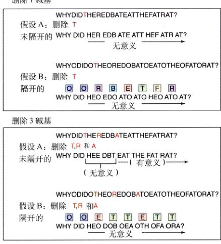
图 15.6 运用 DNA 的移码突变测定遗传密码是否被打断 假设这里的信息是“为什么红蝙蝠吃掉了肥老鼠 (Why did the red bat eat the fat rat?)？” 根据假设 B，信息被打断，3 个字母组成的单词被不读取的核苷酸隔开 (用字母 O 表示)。
氨基酸，所以我们认为是 3，是因为为两个核苷酸组成的密码子不够用来编码蛋白质中常用的 20 种氨基酸。对于 DNA 的 4 种核苷酸 (G、C、T 和 A) 来说，只能形成 4²，或者说 16 种不同的核苷酸对。但是，同样是这 4 种核苷酸可以排成 4³，也就是 64 种不同的三元组合，对于 20 种氨基酸来说足够多了。
理论上来说，基因的密码子可以紧紧挨着排列，形成连续转录的核苷酸序列。或者，在密码子之间序列也可以由不发生编译的核苷酸打断，就像句子中用空格来间隔单词。确定细胞到底使用哪种方式至关重要，因为两种不同的 DNA 编译方法意味着不同的翻译过程。
为了从这两种不同的机制中做出正确的选择，克里克和他的同事们使用化学物质去掉一种病毒 DNA 分子中的 1 个、2 个或 3 个核苷酸，然后看看删除位点下游的基因能否被正确无误地转录。当他们做一个或两个相邻的删除，遗传信息的阅读框 (reading frame) 发生了改变，下游的基因转录后无意义。但是，当他们删除 3 个相邻核苷酸时，恢复了正确的阅读模式，下游基因也被正确地转录了。通过往 DNA 上分别加上 1 个、2 个或 3 个核苷酸，他们也得到了相同的结果。如图 15.6 所示，如果密码子被不转录的核苷酸打断就得不到这些结果。所以，克里克和他的同事们得出结论，认为遗传密码的读取增量是由 3 个核苷酸组成的（换句话说，就是三联体密码 (triplet code)）而读取过程是以 3 个核苷酸为单位连续不间断地进行的。
2) 破译遗传密码
在克里克进行实验的同一年里，其他的研究人员成功地测定了特定的 3 个核苷酸所确定的氨基酸。马歇尔·尼尔博格 (Marshall Nirenberg) 在 1961 年发现向无细胞体系中加入合成的 mRNA 分子多聚 U（一种由一串尿嘧啶核苷酸组成的 RNA 分子）会产生多肽聚苯丙氨酸（一连串苯丙氨酸），所以，决定苯丙氨酸的三核苷酸序列是 UUU。1964年，尼尔博格和飞利普·莱得 (Philip Leder) 发明出一种很有说服力的三联体结合分析法 (triplet binding assay)，可以检验特定的三联体将会与哪个放射性的氨基酸（与 tRNA 复合）相结合，64 种中 47 种可能的三联体中给出了明确结果，Har Gobind Khorana 通过建立具有确定序列的人工 mRNA 分子并测定其指导的多肽链方法破译了剩下 17 种三联体。这样，所有的可能的 64 种三联体序列就都被测出，所有的遗传密码就被破译了（表 15.1）。
3) 这些密码几乎是通用的
在几乎所有的生物体中遗传密码都是相同的。比如，密码子 AGA 在细菌、人类和几乎所有被研究过遗传密码的生物体中都编码精氨酸。遗传密码的通用性是所有生物都具有共同进化渊源的有力证据之一。因为密码是通用的，由一种生物转录来的基因才可以被另外一种生物所翻译，mRNA 足以指令一种功能上具有活性的蛋白质。与之相似，基因可以在一种生物与另一种之间转移并可以在新的宿主成功地转录和翻译。基因表达的通用性对许多基因工程的进展来说很重要。很多商业产品如用来治疗糖尿病的胰岛素，现在就是通过把人类基因植入细菌这些能够生产大量胰岛素的微小工厂来大量生产的。
4) 并非完全通用
1979 年，研究者开始测定人类、牛和鼠的线粒体基因互补核苷酸序列。当研究人员发现这些哺乳动物线粒体所使用的遗传密码并非像生物学家所熟悉的“通用密码”那样完全相同时大吃一惊。在线粒体基因组中，本来表示“终止”的密码子 UGA 现在被读做色氨酸；AUA 本来被读做异亮氨酸而不是甲硫氨酸；AGA 和 AGG 被读做“终止”而不是原来的精氨酸。还有，在叶绿体和纤毛虫（某种原生生物）中也发现了与通用密码的一些微小差别。
Page 5 / 原始页码 289
表 15.1 遗传密码
第 2 个字母
| 第 1 个字母 |
|
第 3 个字母 |
| U |
C |
A |
G |
| U |
UUU (Phe) |
UCU (Ser) |
UAU (Tyr) |
UGU (Cys) |
U |
| UUC (Phe) |
UCC (Ser) |
UAC (Tyr) |
UGC (Cys) |
C |
| UUA (Leu) |
UCA (Ser) |
UAA (终止) |
UGA (终止) |
A |
| UUG (Leu) |
UCG (Ser) |
UAG (终止) |
UGG (Trp) |
G |
| C |
CCU (Leu) |
CCU (Pro) |
CAU (His) |
CGU (Arg) |
U |
| CCC (Leu) |
CCC (Pro) |
CAC (His) |
CGC (Arg) |
C |
| CCA (Leu) |
CCA (Pro) |
CAA (Gln) |
CGA (Arg) |
A |
| CCG (Leu) |
CCG (Pro) |
CAG (Gln) |
CGG (Arg) |
G |
| A |
ACU (Ile) |
ACU (Thr) |
AAU (Asn) |
AGU (Ser) |
U |
| ACC (Ile) |
ACC (Thr) |
AAC (Asn) |
AGC (Ser) |
C |
| ACA (Ile) |
ACA (Thr) |
AAA (Lys) |
AGA (Arg) |
A |
| AUG (Met/起始) |
ACG (Thr) |
AAG (Lys) |
AGG (Arg) |
G |
| G |
GCU (Val) |
GCU (Ala) |
GAU (Asp) |
GGU (Gly) |
U |
| GCC (Val) |
GCC (Ala) |
GAC (Asp) |
GGC (Gly) |
C |
| GCA (Val) |
GCA (Ala) |
GAA (Glu) |
GGA (Gly) |
A |
| GCG (Val) |
GCG (Ala) |
GAG (Glu) |
GGG (Gly) |
G |
注：每个密码子由图示顺序的 3 个核苷酸组成。比如，ACU 表示苏氨酸。第 1 个字母 A，位于第 1 字节列中；第 2 个字母 C，位于第 2 字节列中，然后是第 3 个字母 U，位于第 3 个字节列中。每个 mRNA 密码子都由一个 tRNA 上的相对应的反密码子来辨认。有些 tRNA 分子能够辨认一个以上的 mRNA，但它们代表的都是同一个氨基酸。实际上，大多数氨基酸都可以由一个以上的密码子确定。例如，苏氨酸由 4 个密码子确定，这 4 个密码子只在第三个核苷酸上有区别 (ACU, ACC, ACA, ACG)。
因此，遗传密码似乎还并不是完全通用的。很久以前，大概是它们开始以内共生的方式存在之后吧，线粒体和叶绿体就开始以不同的方式阅读密码，特别是那个和“终止”信号有关的密码部分。
15.3 基因先转录后翻译
15.3.1 转录
基因表达的第一步是产生编码基因 DNA 序列的 RNA 拷贝，这个过程叫做转录。要了解转录过程背后的机制，首先要关注执行转录的一种值得注意的酶：RNA 聚合酶（图 15.7）。
1) RNA 聚合酶
人们对细菌中的 RNA 聚合酶了解最多。细菌 RNA 聚合酶又大又复杂，由 5 个亚基组成；2 个与调节蛋白相结合的 α 亚基，1 个结合 DNA 模板的 β′ 亚基，1 个与
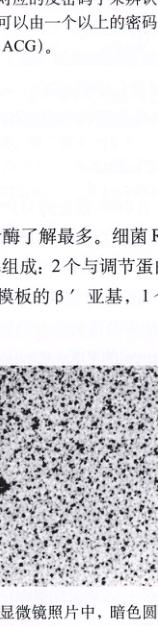
图 15.7 RNA 聚合酶 在这张电子显微镜照片中，暗色圆圈就是与噬菌体 DNA 上的几个启动子位点相结合的 RNA 聚合酶分子。
Page 6 / 原始页码 290
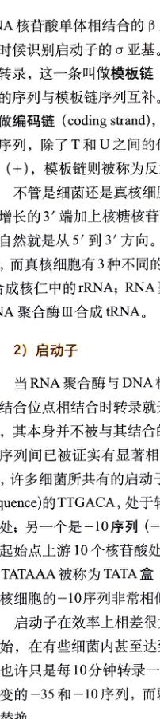
图 15.8 转录泡模型 DNA 双螺旋在进入 RNA 聚合酶复合体时解旋，出来时复旋。DNA 的一条链起到模板的功能，而核苷酸材料则根据这个模板被装配成 RNA。
RNA 核苷酸单体相结合的 β 亚基，以及 1 个在开始的时候识别启动子的 σ 亚基。DNA 双链中只有一条能够被转录，这一条叫模板链 (templet strand)，RNA 转录本的序列与模板链序列互补。DNA 中未被转录的那条链叫做编码链 (coding strand)，它与 RNA 转录本有着相同的序列，除了 T 和 U 之间的代换。编码链也被称为有义链 (+)，模板链则被称为反意义链 (-)。
不管是细菌还是真核细胞，聚合酶都是在 RNA 链不断增长的长 3′ 端加上核糖核苷酸。不需要引物，合成的过程自然就是从 5′ 到 3′ 方向。细菌只含有一种 RNA 聚合酶，而真核细胞有 3 种不同的 RNA 聚合酶：RNA 聚合酶 I 合成核仁中的 rRNA；RNA 聚合酶 II 合成 mRNA；还有 RNA 聚合酶 III 合成 tRNA。
2) 启动子
当 RNA 聚合酶与 DNA 模板链上的一种叫做启动子的结合位点相结合时转录就开始了。启动子是一个短序列，其本身并不被与其结合的聚合酶转录。在不同启动子序列间已经被证实有显著相似的部分（保守序列）。比如，许多细菌所共有的启动子，一个叫微 -35 序列 (-35 sequence) 的 TTGACA，处于转录起始点上游 35 个核苷酸处；另一个是 -10 序列 (-10 sequence) TATAAT，在转录起始点上游 10 个核苷酸处。在真核细胞 DNA 中，序列 TATAAA 被称为 TATA 盒 (TATA box)，处于 -25，与原核细胞的 -10 序列非常相似，只不过距离起始点更远。
启动子在效率上相差很大。强的启动子导致频繁转录开始，在有些细菌内甚至达到每 2 秒就有一次。弱启动子也许只是每 10 分钟转录一次。大多数的强启动子具有不变的 -35 和 -10 序列，而弱启动子在这些位点常常发生替换。
3) 转录起始
RNA 聚合酶与启动子的结合就是基因转录的第一步。在细菌内，RNA 聚合酶的 σ 亚基识别 -10 序列启动子，并使 RNA 聚合酶与之相结合。重要的是，这个亚基不可以用解旋 DNA 双螺旋就能找到 -10 序列。在真核细胞中，-25 序列在转录起始中起到了相似的作用，它是一个关键蛋白质因子的结合位点。其他的真核细胞因子随后一个接一个地结合，组装成一个又大又复杂的转录复合体 (transcription complex)。真核细胞的转录复合体将在后面的章节仔细地介绍。
4) 延伸
RNA 链的转录通常是以 ATP 或者 GTP 开始的。它们负责形成转录的 5′ 端，然后随着核糖核苷酸的不断增加，链会沿 5′–3′ 方向延伸。与 DNA 合成不同，这里不需要引物。含有 RNA 聚合酶、DNA 和生长着 RNA 转录本的区域叫做转录泡 (transcription bubble)，因为它包含一个局部松散的 DNA“泡”（图 15.8）。在这个泡内，新合成 RNA 链的前 12 个碱基临时性地与 DNA 模板链形成螺旋。这个螺旋不是十分完整的一圈，它稳定了 RNA 的生长。随着转录泡的移动，RNA 链不断脱离 DNA 模板链。DNA 杂合螺旋每当加上一个核苷酸的时候就旋转一次，以保证 RNA 的 3′ 端总在催化位点之内。
转录泡沿着 DNA 以稳定的速率向下移动，每秒钟大概 50 个核苷酸，而生长中的 RNA 链则不断地从泡中伸出。随着转录泡的移动，已经转录完毕的 DNA 在转录泡后重新绕在一起。
与 DNA 聚合酶不同的是，RNA 聚合酶没有校对能力，因此转录会比复制产生更多的错误，但是这些错误不会传给后代。大部分基因都要转录许多次，所以少数出错的拷贝并无大碍。
Page 7 / 原始页码 291
5) 终止
在基因的末端处是“终止”序列，它导致磷酸二酯键合成的终止，转录泡内的 RNA-DNA 杂合链分离，RNA 聚合酶释放开 DNA，而转录泡内的 DNA 重新螺旋化。最简单的停止信号是一系列的 GC 碱基对着一系列 AT 碱基对。这样停止区域内的 RNA 转录本形成一个 GC 发夹结构（图 15.9），紧跟着是 4 个或更多的 U 核苷酸。这个结构是怎样使转录终止的？发夹结构使得 RNA 聚合酶在合成它了之后立刻暂停，并使得聚合酶直接越过后面最弱的，其稳定性不足以在这么长的暂停过程中维持连接。相比，转录泡内的 RNA 链与 DNA 脱离，转录终止。有很多蛋白质因子在部分基因转录过程中起辅助发夹结构形成的作用。
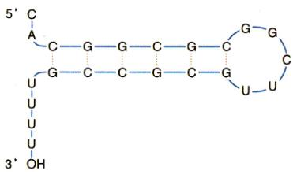
图 15.9 一个 GC 发夹结构 这个结构使基因转录终止。
6) 转录后修饰
真核细胞中，所有的 mRNA 转录物在被翻译之前必须经过很长的路径才能从细胞核到细胞质中。真核细胞 mRNA 转录物在这个过程中会经历几种不同的修饰：
(1) 5′ 端帽 (5′ cap)：转录通常从 A 或 G 开始。在真核细胞中 5′ 端的末端磷酸基被去掉，然后与 GTP 形成一种很不寻常的 5′-5′ 联结，称为之为 5′ 帽子结构。这种结构可以保护 RNA 模板的 5′ 端不会达到细胞质的漫长旅途上被核酸酶和磷酸酯酶破坏。如果没有这些帽，RNA 转录本很快就会被降解。
(2) 3′ poly-A 尾 (3′ poly-A tail)：真核细胞转录物的 3′ 端在特定的位点被切开，通常是在含有 AAUAAA 序列的地方。然后一种特定的 poly-A 聚合酶会在转录本的 3′ 端上加上大约 250 个 A 核糖核苷酸，这叫做 3′ poly-A 尾，这一长串的 A 保护转录本不会被核酸酶降解。它同样也能使转录本成为蛋白质合成更好的模板。
15.3.2 翻译
在原核细胞中，当一个 mRNA 的起始部分与核糖体中的 rRNA 相结合时，翻译就开始了。mRNA 与核糖体的接触方式是不论什么时候都只有一个密码子暴露在多肽合成位点。tRNA 分子具有互补的三核苷酸序列，或者叫做反密码子，与暴露的 mRNA 密码子相结合。
因为这个 tRNA 分子携带者一个特定的氨基酸，于是就在多肽链的这个位置加上这个氨基酸。随着 mRNA 分子沿着核糖体移动，mRNA 上连续的密码子相继暴露出来，一系列的 tRNA 一个接一个地结合在暴露的密码子上。这些 tRNA 每一个上面都携带着一个相应的氨基酸，可以将其逐一加在延伸的多肽链末端（图 15.10）。
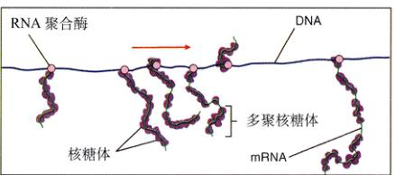
图 15.10 翻译过程 细菌没有细胞核，在 DNA 与细胞质之间也就不存在膜的隔阂。这是一张大肠杆菌基因转录过程的电镜照片，可以看到翻译过程的每一个步骤。箭头所指是 RNA 聚合酶。在 DNA 上悬挂的每个 mRNA 分子上，一系列的核糖体在装配多肽链。这些成簇的核糖体有时被称为“多聚核糖体”。
大约有 45 种不同的 tRNA 分子。为什么是 45 而不是 64 个 tRNA（每个密码子对应一个）呢？这是因为 tRNA 反密码子的第三个碱基对允许发生一些“摆动”，有些 tRNA 能够识别一个以上的密码子。
特定的氨基酸是如何与相应的 tRNA 分子相连结？使三核苷酸序列与合适的氨基酸相配对是翻译的关键一步，这是由一类值得关注的酶来完成的，它们叫做活化酶。
Page 8 / 原始页码 292
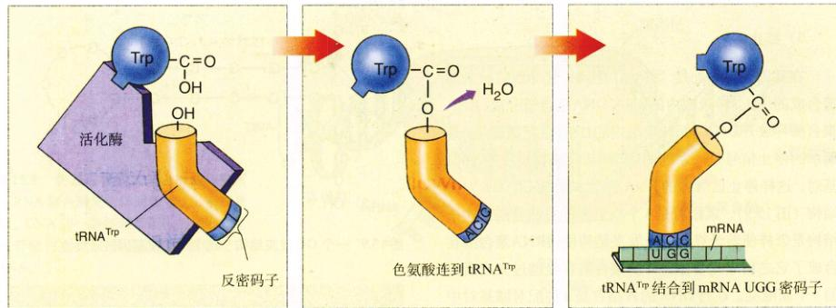
图 15.11 活化酶“阅读”遗传密码 每一种活化酶辨认并结合一种特定的氨基酸，比如色氨酸；它同时也辨认并结合携带有着对应着该氨基酸的反密码子的 tRNA 分子，比如 ACC 对应着色氨酸。这样，活化酶就把 tRNA 分子与相应的氨基酸连接在一起了。
1) 活化酶
特定的 tRNA 分子与特定的氨基酸相连是由一类活化酶的活动来完成，这些活化酶叫做氨酰 tRNA 合成酶 (aminoacyl-tRNA synthetases)，每一种分别对应着常见的 20 种氨基酸（图 15.11）。也就是说，这些酶必须同时与 tRNA 分子上特定的反密码子序列以及特定的氨基酸相对应。有些活化酶只对应一种反密码子，于是也就只对应一种 tRNA 分子。另外一些可以识别两种、三种、四种甚至是六种不同的 tRNA 分子，每一中都具有不同的密码子，但编码的是同一个氨基酸（见表 15.1）。如果认为 mRNA 的核苷酸序列是一些加密的信息，那么 20 种活化酶就是负责来将这些信息解密的。
2) “起始”与“终止”信号
64 种密码子当中有 3 种没有任何 tRNA 的反密码子能与之互补：UAA、UAG 以及 UGA。这些密码子，叫做无意义密码子 (nonsense codon)，在 mRNA 信息中表示“终止”信号，标记多肽链的终点。标记了多肽链起点的“起始”信号在 mRNA 信息中是密码子 AUG，同时也表示甲硫氨酸。核糖体通常是把它在 mRNA 上遇到的第一个 AUG 作为翻译起始信号。
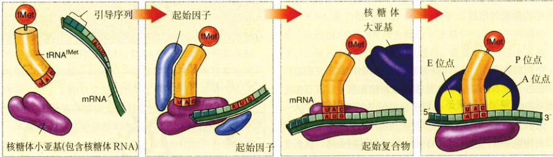
图 15.12 起始复合物的形成 在原核细胞中，一种叫做起始因子的蛋白质起到了重要的作用，它将核糖体小亚基与 N- 甲酰甲硫氨酸 tRNA，即 tRNAfMet 正确放置在 mRNA 的起始位置。当 tRNAfMet 被放置在 mRNA 的第一个 AUG 密码子上时，与核糖体大亚基结合，形成了连接将 tRNA 分子与核糖体结合的 P、A 和 E 位点，多肽链合成就开始了。
3) 起始
在原核细胞中，当形成起始复合物 (initiation complex) 时，多肽链合成就开始了。首先，一个 tRNA 分子携带一个经过化学修饰的甲硫氨酸，即 N-甲酰甲硫氨酸 tRNA (tRNAfMet)，与核糖体的小亚基相结合。一种叫做起始因子 (initiation factors) 的蛋白质将 tRNAfMet 定位在核糖体表面的 P 位点 (肽基, peptidyl)，这里是肽键形成的部位。在它旁边，将形成另外两个位点：A 位点 (氨酰基, aminoacyl)，与一系列携带氨基酸的 tRNA 结合；E 位点 (出口)，这是空的 tRNA 离开核糖体的地方（图 15.12）。
Page 9 / 原始页码 293
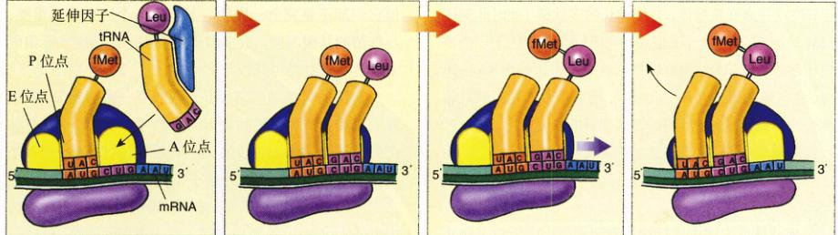
图 15.13 移位 原核细胞中起始的 tRNAfMet (真核细胞中起始的 tRNAMet) 占据 P 位点，具有与 mRNA 密码子互补反密码子的 tRNA 分子结合在 A 位点。随着核糖体沿 mRNA 向右移动 3 个核苷酸，fMet 转移到新进来的氨基酸（亮氨酸）上。空的 tRNAfMet 移动到 E 位点并离开核糖体，而伸长的多肽链移动向 P 位点，而 A 位点依然暴露准备结合下一个携带氨基酸的 tRNA。
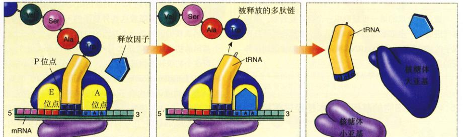
图 15.14 多肽链合成的终止 由于 tRNA 不具有与 3 个终止信号密码子互补的反密码子，如图中的 UAA 无意义密码子，因此，当核糖体遇到一个终止密码子，它就会停止移位。一种特殊的释放因子通过断开多肽链与 P 位点上 tRNA 之间的共价键来促使多肽链的释放。
这个起始复合物由另外一个起始因子引导，随后与 mRNA 上的反密码子 AUG 相结合。mRNA 必须结合在 mRNA 分子的起始部位，才能使所有的被转录基因都能够被翻译。在细菌中，mRNA 分子的起始部位由前导序列辨认标记，它与核糖体上的一个 rRNA 分子互补，这种互补关系保证了从起始的部分开始读取 mRNA。细菌的一个 mRNA 转录本内通常含有若干个基因（多顺反子 mRNA），每个核细胞的基因都有独立的 mRNA 来转录（单顺反子 mRNA）。
真核细胞中的起始过程大体与之相似，不过在两个主要方面上有区别：第一，在真核细胞中，起始的氨基酸是甲硫氨酸而不是 N-甲酰甲硫氨酸；第二，起始复合物远比在细菌中要复杂得多，包含 9 个或更多的蛋白质因子，其中许多都是由亚基组成的。真核细胞的起始复合物会在后面的章节中详细讨论。
4) 延伸
形成起始复合物之后，核糖体的大亚基与之结合，将 mRNA 上与起始密码子 AUG 相邻的密码子显露出来，使之处于恰当的位置，好与携带另一个氨基酸的 tRNA 分子结合。当携带着合适反密码子的 tRNA 分子出现时，一种叫做延伸因子的蛋白质协助它与 A 位点上暴露的 mRNA 密码子相结合。当第二个 tRNA 与核糖体结合，把它的氨基酸直接放置在起始的甲硫氨酸旁边，这时甲硫氨酸仍与 tRNA 分子相连，而这个 tRNA 也仍旧联结着核糖体。这两个氨基酸经过一个由核糖体大亚基催化的化学反应，把起始的甲硫氨酸从它的 tRNA 上释放并通过一个肽键将其连在第二个氨基酸上。
5) 移位
在被称为移位 (translocation) 的过程中（图 15.13），核糖体在其他延伸因子指导下，沿着 mRNA 分子 5′→3′ 方向移（移动）3 个核苷酸。这个运动使起始的 tRNA 处于 E 位点并离开核糖体，并使伸长的多肽链（此时刻还只有 2 个氨基酸）处于 P 位点，把 mRNA 上的下一个密码子暴露在 A 位点。能够辨认这个密码子的 tRNA 出现时，它与该密码子在 A 位点结合，它携带的氨基酸紧邻伸长的多肽链。整条链随后转移到新的氨基酸上，整个过程再重复一遍。
6) 终止
延伸就以上述方式持续，直到遇到一个无意义终止密码子（比如 UAA，图 15.14）。无意义密码子并不与 tRNA 结合，但是它们能够被释放因子 (release factor) 识别，这是一种能够使新合成多肽链离开核糖体的蛋白质。
Page 10 / 原始页码 294
15.4 真核细胞的基因转录本是经过剪接的
15.4.1 内含子的发现
虽然真核细胞与细菌蛋白质合成的机制是相似的，但它们却不是完全一样的。其中有一个区别非常重要，与细菌的基因不同，大多数真核细胞的基因比实际编码多肽链所需的基因片段要大得多。
典型的真核细胞基因并不仅仅是一条直径 DNA 按着编码蛋白质氨基酸的基因简单排列，相反，一个真核细胞的基因是一段一段的。编码蛋白质的 DNA 序列被断成许多小的片段，称为外显子 (exon)，它们在一个基因之内间隔存在，间隔区是一些较长的编码 DNA，称为内含子 (intron)。想像从卫星上看一条公路，随机散落在混凝土公路上的是汽车，一些成群地移动，另一些是单个地前行；但大部分的路是空的。这就是真核细胞基因的样子，外显子散落在很长的一系列内含子中间。在人类内，只有 1% 到 1.5% 的基因组是编码蛋白质的外显子，而 24% 是间隔着这些外显子的不编码的内含子。
当真核细胞转录一个基因的时候，它先产生一整个基因的初级 RNA 转录本 (primary RNA transcript)，然后这个初级 RNA 转录本被加工。首先，称为核内小核核糖蛋白 (small nuclear ribonucleoprotein, snRNP) 的酶-RNA 复合物认出内含子末尾的核苷酸序列。然后若干个 snRNP 与蛋白质复合形成一个大装置叫做剪接体 (spliceosome)，它几乎与核糖体一样大。在剪接体内，起。然后剪接体从这些位置把 RNA 切断，去除内含子并把外显子连在一起形成较短的成熟 RNA 转录本，也就是把内含子剪去（图 15.15）。
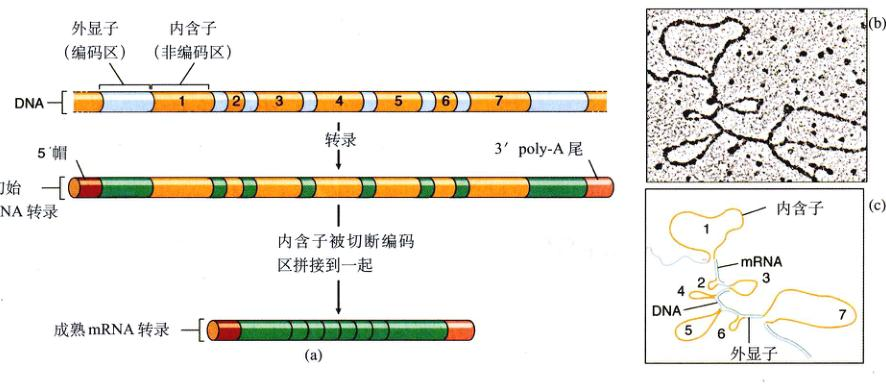
图 15.15 真核生物卵清蛋白基因是断裂的 (a) 卵蛋白以及它的初级 RNA 转录物含有 7 个在核糖体用来指导蛋白质合成的 mRNA 中并不存在的片段。剪接体将这些片段（内含子）剪切掉，并把剩下的片段（外显子）剪接在一起。(b) 如果把加工后的转录物与 DNA 杂交，DNA 所具有的内含子就显而易见了。电镜照片中的 7 个环就是在示意图 (c) 中所描绘的 7 个内含子。
Page 11 / 原始页码 295
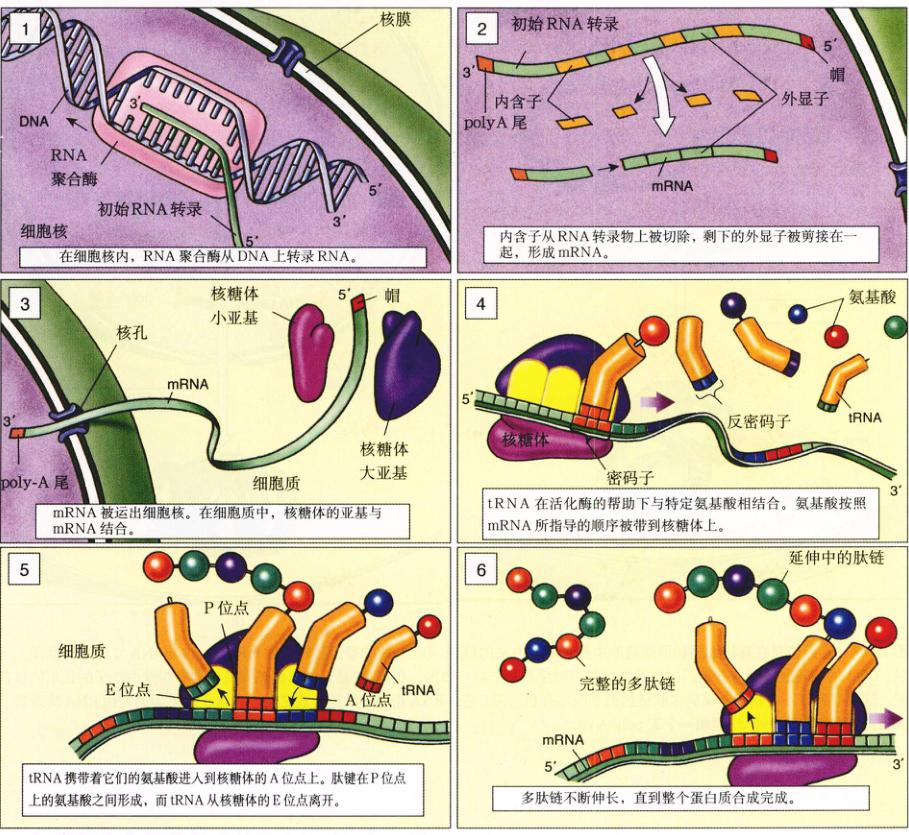
图 15.16 真核细胞基因表达概述
1. 在细胞核内，RNA 聚合酶从 DNA 转录 RNA。
2. 内含子从 RNA 转录物上被切除，剩下的外显子被剪接在一起，形成 mRNA。
3. mRNA 被运出细胞核。在细胞质中，核糖体的小亚基与 mRNA 结合。
4. tRNA 在活化酶的帮助下与特定氨基酸相结合。
5. tRNA 携带者它们的氨基酸进入核糖体的 A 位点上。肽键在 A 位点上的氨基酸之间形成，而 tRNA 从核糖体的 E 位点离开。
6. 多肽链不断伸长，直到整个蛋白质合成完成。
实际被翻译成蛋白质的 RNA 转录本（图 15.15）。
因为在转录本被翻译成蛋白质之前，内含子就已经从初级 RNA 转录物上被切除，内含子不会影响其所在基因编码的蛋白质结构——尽管内含子占人类基因全长的 90% 以上。
为什么要有内含子？许多人认为基因都似乎可以被剪接体以多种不同的方式剪接到一起。在很多情况下，外显子不仅仅是随机的碎片，而是一些功能性的模块。一个外显子可能编码了蛋白质的一段直径，另一个编码了弯曲段，其他的可能是一个平片。就好象插件儿玩具一样，你可以把相同的外显子运用在不同的组合和顺序的联结当中，以创造出各种各样的结构。
有了这些可变剪接 (alternative splicing)，人类基因组的 30 000 个基因似乎可以编码多达 120 000 种不同的可表达信使 RNA。看起来，人类之所以达到更高的复杂性，不是通过具有更多的基因片段（我们所具有的基因只不过是果蝇的两倍），而是获取了将它们组合在一起的新方法。
RNA 的剪切
基因转录时，初级 RNA 转录物（也就是在任何修饰都未发生之前的那个由 RNA 聚合酶合成的基因副本）含有和整个基因互补的序列，包括内含子和外显子。但是，在一个被称为 RNA 加工 (RNA processing)，或剪接
Page 12 / 原始页码 296
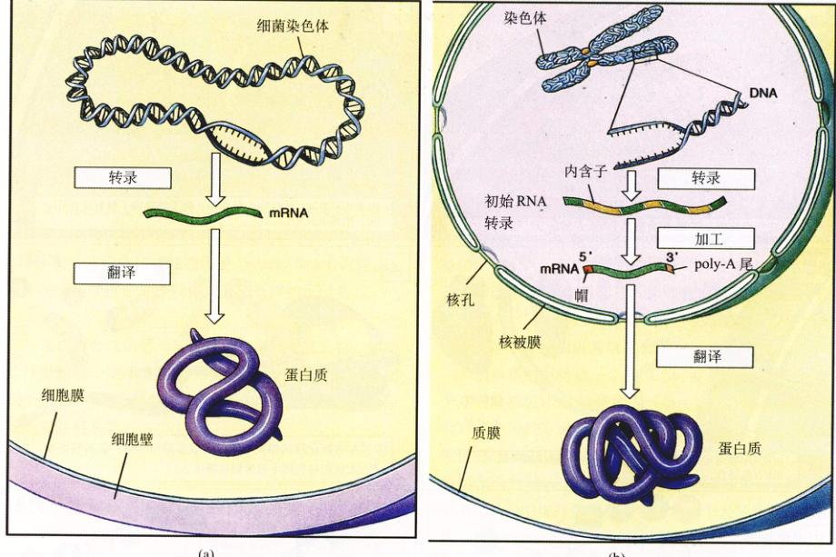
图 15.17 基因信息在真核细胞和原核细胞中经过不同方法的处理 (a) 细菌的基因被转录成 mRNA，该 mRNA 立即进行翻译。所以，DNA 的核苷酸序列与其编码的多肽链的氨基酸序列是严格一致的。(b) 真核基因的典型差异是含有叫做内含子的长串的核苷酸，这些序列并不与基因所编码多肽链的氨基酸序列相对应。在 mRNA 指导多肽链合成之前，内含子从基因的初级 RNA 转录物上被去掉，并被加上一个 5′ 帽和一个 3′ poly-A 尾。
(splicing) 的过程中，内含子序列在被用于多肽链合成之前就被从转录物上切除掉；也就是说，这些序列并不被翻译。剩下的序列，即外显子，被剪接形成最后用于翻译的加工后 mRNA。在人类基因中，内含子可以比外显子大 10 到 30 倍。举个例子来说，虽然编码血红蛋白的 144 个氨基酸需要用到 432 个核苷酸，但是在红细胞白基因的初级 mRNA 转录本实际上有 1356 个核苷酸。图 15.16 概括了真核细胞蛋白质合成的全过程。
15.4.2 细菌与真核细胞基因表达的区别
(1) 多数的真核细胞基因具有内含子：除了在原始细菌的少数基因当中存在外，原核细胞的基因都不具有内含子（图 15.17）。
(2) 细菌每个单独的 mRNA 分子通常都包含若干个基因的转录物；细菌通过把具有相关功能的基因放在同一个 mRNA 分子上顺调配和控制这些功能。真核细胞的 mRNA 分子很少携带一个以上的基因转录本。真核细胞通过其他的办法来调控基因表达。
(3) 由于真核细胞具有细胞核，它们的 mRNA 分子在被翻译之前必须完全形成并必须通过核膜。而不具有细胞核的细菌通常是在转录还未完成的时候就开始翻译 mRNA 分子了。
(4) 在细菌中，AUG 密码子是翻译开始的地方，其前面具有特殊的核苷酸序列。在真核细胞内，转录之后的 mRNA 分子 5′ 端的前导序列被修饰，加上一个 5′ 帽子，
Page 13 / 原始页码 297
这是一个甲基化的三磷酸鸟嘌呤核苷。这个帽子结构通过将 mRNA（通常是在第一个 AUG 的地方）与核糖体小亚基结合来启动翻译过程。
(5) 真核细胞的 mRNA 分子在翻译之前被修饰：内含子被去掉，而剩下外显子被剪接到一起；被加上一个 5′ 帽，还加上了一个由 200 个腺嘌呤 (A) 核苷酸组成的 3′ poly-A 尾。这些修饰可以减缓细胞中的酶对于 mRNA 的损害。
(6) 真核细胞的核糖体比细菌的要稍稍大一些。
Page 14 / 原始页码 298
小 结
15.1 中心法则描述了基因编码信息的流向
- 中心法则 DNA → RNA → 蛋白质需要 3 种主要的 RNA：信使 RNA (mRNA)，负责指导将氨基酸装配成蛋白质的基因转录物；核糖体 RNA (rRNA)，与蛋白质结合形成核糖体从而执行翻译过程；还有转运 RNA (tRNA)，这是一种负责将氨基酸运输至核糖体并装配成蛋白质的分子。
15.2 基因以三核苷酸密码子编码信息
- DNA 的核苷酸序列编码了蛋白质的氨基酸序列。从 DNA 转录来的 mRNA 被核糖体读取，每 3 个核苷酸是一个密码子。
15.3 基因先转录后翻译
- 在转录过程中，RNA 聚合酶用互补于 DNA 特定片段序列的核苷酸来制造 mRNA。
- 在翻译过程中，mRNA 序列在胞质核糖体上指导氨基酸装配成蛋白质的过程。
- 基因和 mRNA 分子上的信息是以每 3 个核苷酸作为一个密码子被读取的。
- 在核糖体上，mRNA 被正确地定位以使其每次只暴露出一个密码子。
- 密码子的暴露允许具有互补序列（反密码子）的 tRNA 分子与之结合。
- 联结在 tRNA 另一端的是一个氨基酸，它将被加在延长的多肽链末端。
15.4 真核细胞的基因转录本是经过剪接的
- 大多数真核细胞的基因包含着不编码的序列（内含子），它们散布在编码序列（外显子）之间。
- mRNA 分子中的分子部分在进行翻译之前就从 RNA 初级转录物中去除了。
问 题
- 主要的 3 大类 RNA 是什么？每一种的功能是什么？
- 在转录过程中，RNA 聚合酶的作用是什么？是什么决定了 RNA 聚合酶在哪里开始又在哪里结束其作用？
- 克里克和他的同事们是怎样测定出多少个核苷酸决定一个氨基酸的？什么叫反密码子？
- 在蛋白质合成的过程当中，是什么机制保证了每次只有一个氨基酸被加在多肽链上？又是怎么机制保证了正确的氨基酸被加在多肽链的正确位置上？
- mRNA 分子如何确定它编码的多肽链应该在何处开始？它又是如何确定该在哪里结束的？
- 延伸因子在翻译过程中起了什么样的作用？
- 什么是内含子？什么是外显子？它们分别与最后被翻译的 mRNA 有什么关系？
媒体资源
- 基因的活性
- 科学家是如何思考的：遗传编码的中断 (Nirenberg / Khorana) — 遗传密码是三联体密码 (Crick)
- 转录
- 翻译
- 多聚核糖体
- 转录
- 翻译
- 科学家是如何思考的：tRNA 假说的证据 (Chapevile)
- 技能测验：翻译
- 科学家是如何思考的：内含子的发现
- 技能测验：内含子与外显子